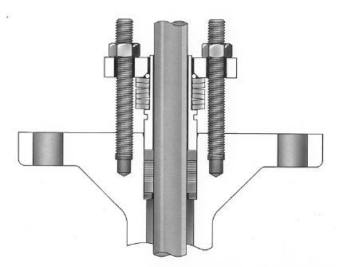

ENVIRO-SEAL Graphite for Rotary Valves

- 1A rotary-specific design — not a rotary adaptation of Duplex (no rotary version) or Graphite ULF (sliding-stem only)
- 2Meets the 100 ppmv EPA leakage criterion up to 1500 psi (103 bar), -6 to 316°C (20-600°F)
- 3Extends to 371°C (700°F) in non-environmental service, where the emissions requirement doesn’t apply
- 4Fire safety is a separate, independent reason to specify it, apart from the emissions class
After Control Valve Handbook, 6th ed., Fig. 3.34 (printed p. 73) — used directly; the source drawing carries no printed part labels, so no numbered markers were added. Component Index: cvh-cmp-enviroseal-graphite-packing-rotary.